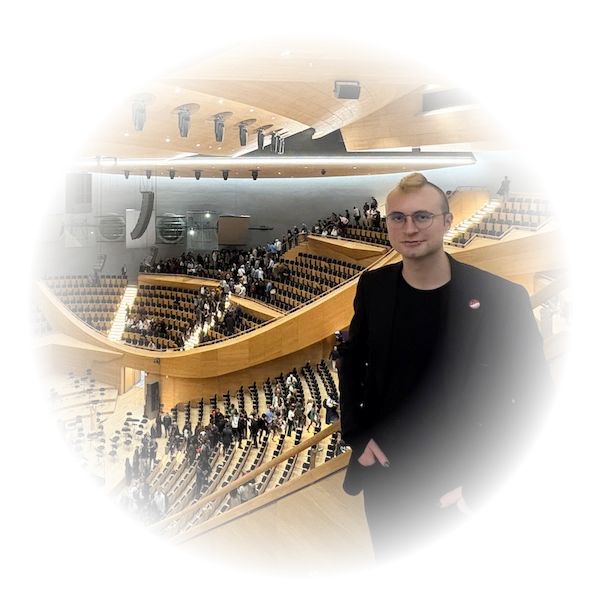

Composer Candidate | Music Portfolio
↓Arda Mavi is a composer and musician working across cinematic and contemporary styles, with a focus on emotional texture and atmospheric writing. His compositional repertoire spans orchestral music, film-inspired soundscapes, and rock that reflects a broad expressive range from aggression to melancholy. While his primary musical instruments include the electric guitar and bass guitar, he has recently continued to expand his instrumental practice to include the violin and piano.
"String Quartet in C Minor" (2 minutes 25 seconds) was written in 2025 for two violins, viola, and cello. The work draws
on a cinematic aesthetic expressed through melodic lines while remaining rooted in the chamber music tradition. The
piece consists of two main sections and highlights two core emotional tones from beginning to end. Melodic and harmonic
layers develop in close interaction, with violin solos serving as structural focal points. The orchestral realization was produced in Logic Pro using the Berlin Orchestra VST.
Score: MuseScore
"Spook's Theme" (1 minute 34 seconds) was written in 2026 for the dark fantasy comic book by Mehmet Eren Küzenk. The
piece is a character-driven theme shaped by the story's thriller and action-oriented narrative. The piece moves through
distinct emotional states, from a calm but unsettling opening, through a first surge of tension, into an intense climax,
and finally a quiet closure. Scored for oboe, piano, cello, and double bass, it integrates ideas and emotions within a
compact form: the oboe carries the character's unease, the piano sustains the tension, and the cello and double bass
anchor the darker textural layers of the comic's world. The orchestral realization was produced in Logic Pro using the Berlin Orchestra VST.
Score: MuseScore
"Dodecett for 12 Instruments" (2 minutes 39 seconds) was written in 2025 for flute, oboe, bassoon, trumpet, trombone,
tuba, bass drum, two violins, viola, cello, and double bass. The piece opens with restraint and builds gradually in
emotional density, exploring the expressive range of this ensemble within a short but melodically rich form built across
several distinct sections. Intended as the first part of a two-part work; the second part was never written. The orchestral realization was produced in MuseScore using the Vienna Symphonic Library.
Score: MuseScore
“Engine” (2 minutes 43 seconds) was written and performed in 2026 by Arda Mavi. A rock piece for distorted electric
guitar and bass synthesizer, it explores low-frequency textures and dark, brooding guitar lines. Written in ABCB form.
The bass synthesizer was performed using a MIDI keyboard, and both instruments were recorded and edited in Logic Pro.
“Nick” (1 minute 15 seconds) was written in 2026. A short soft rock–influenced piece, it is scored for distorted
electric guitar and bass guitar, both performed by Arda Mavi. Drum programming, along with the recording and editing of
the guitar and bass parts, was carried out in Logic Pro. Written in ABACA form.
“Jack” (2 minutes 3 seconds) was written in 2026. Structured around a short introductory passage, the piece develops
through an ABCDB form, later returning to and transforming earlier material. The work is characterized by warm bass
guitar riffs. Production work, including drum programming and the recording and editing of electric and bass guitar
parts, was done in Logic Pro.
Sheet music available on MuseScore
Explore Arda Mavi’s musical journey on:
Medium
Curated playlists:
Spotify Profile